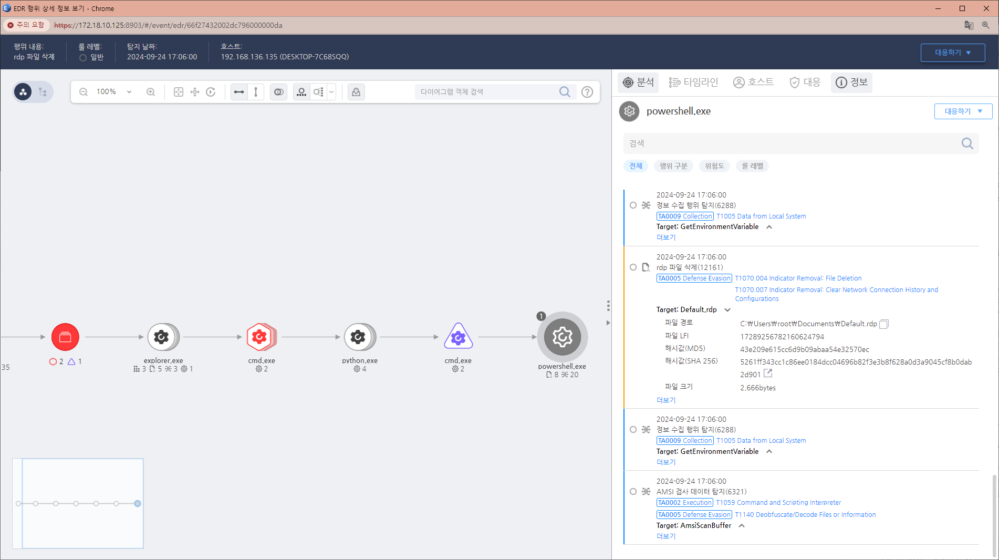

MITRE ATT&CK 액션을 기준으로 대응 방안을 작성
(Action = File-Delete) AND (Current Process name = "powershell.exe") AND (Current Process path = "system32" OR "syswow64") AND (Target Process exetention = "rdp") AND (Target Process path != "system32" OR "syswow64")

해당 행위를 수행한 프로세스를 종료합니다. 공격자에 의해 PC가 제어되었을 가능성이 있으므로 호스트 네트워크를 격리합니다. 공격자 C&C 서버로 추정되는 주소를 차단합니다.
로그 감사 강화 (Logging and Monitoring)
권한 관리 (Access Control)
로그 보존 및 백업 (Log Retention and Backups)
Action 실행시 함꼐 영향을 받는 다른 Techniqes
| ATT&CK |
|---|
| T1059.001 |
| D3FEND |
|---|
| D3-ACI Authentication Cache Invalidation |